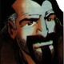

Forums galactiques > Assemblée Galactique : diplomatie officielle > Guerre totalE
Pages : 1 2
| Horlbar Respect diplomatique : 142  29/07 ETU 17:37 | Score : 6 Détails Le Commandant Horlbar avait tout observé en silence, analysant la situation froidement, pesant les différents avis émis par ses pairs présents à l'Assemblée. Serrant les poings, il s'avança d'un pas bruyant, sa façon d'exiger le calme. Il prit alors la parole en regardant chacun des contestataires les uns après les autres :
"Votre comportement est indigne, vous vous insurgez parce que vous entendez parler de traîtrise !" Il marqua une pause, puis secoua la tête énergiquement, et reprit d'une voix sourde, teintée de colère : "Le Commandant Vincenzo Rimi a-t-il trahi ? Vous qualifieriez de trahison un acte de loyauté envers l'Empire des Sens, qui apparaît comme son véritable camp ?" Horlbar haussa alors la voix et leva la main en une sorte de salut envers Vincenzo Rimi : "Traîtrise ? Je salue votre courage, vous déclarez vos intentions haut et fort ! puis, se tournant à nouveau vers les autres Commandants : Commandants, écoutez-moi ! Vous vous êtes laissés abuser par un seul homme, vous lui avez fait confiance en croyant qu'il le méritait. La faute vous revient, à vous seuls !" Sur ces dernières paroles, il leva le poing et montra du doigt ses interlocuteurs. Puis, d'une voix plus douce, un brin moqueuse, il conclut avant de quitter la salle : "Jusqu'à preuve du contraire, tout le monde est un ennemi à mes yeux. Apprenez la leçon et vous en sortirez plus forts, plus grands... La guerre, la course au pouvoir ne sont pas un jeu, croyez-vous pouvoir tout contrôler ? En politique comme à la guerre, seuls les plus habiles et les plus rusés peuvent espérer obtenir un jour la victoire." C'est ainsi que le Commandant Horlbar exprimait son mépris pour ceux qui s'engageaient dans une guerre politique et militaire sans envisager que l'ennemi pût se révéler trompeur et intelligent. | ||
| Vincenzo Rimi Respect diplomatique : 362  29/07 ETU 17:38 | Score : 0 Détails "Je comprends maintenant votre point de vue,les vraix amis du traitre n'auraient plus confiance en lui selon vous?Mais si ils font cela,c'est eux qui deviennent les traitres,abusant de la propre confiance du traitre.Ceci est une chaine sans fin,et seule la confiance permet de la rompre.
Vos arguments sont très intéressants et je suis ravi de débattre avec vous." Vincenzo se tourna vers Horlbar; "Merci de votre soutien,mais tout ceci n'est pas important à mes yeux.C'est ma campagne,qu'importe ce que els auters en pensent." | ||
| Ben Oreat Respect diplomatique : 10  29/07 ETU 17:40 | Score : 0 Détails Je me ferai aussi une joie de débattre avec vous et nous lutterons contre les traitres qui pourrissent la vie de certains commandants...
| ||
| Néo Dracula Respect diplomatique : 201  29/07 ETU 18:02 | Score : 2 Détails Néo Dracula avait écouté le débat avec attention depuis le début.
Les reproches des contestataires le fit réagir : "À vos dires, on croirait que vous sortez tout frais de votre foyer familial, ignorant les réalités de la vie. Il nous arrive parfois des situations qui nous imposent un choix: Trahir ou mourir. La deuxième solution laisserait derrière soit une mort stupide et pathétique, laissant ses proches dans le tourment, sans être parvenu à son but ultime. Telle est la vie de la galaxie. Seuls les plus forts, les plus rusés, les plus sages survivront, c'est tout." "Un commandant ne pouvant pas comprendre cela n'est pas un commandant potentiel." Le vampire se rasseya d'un air serein, le regard sage. | ||
| Elaeis Respect diplomatique : 17  29/07 ETU 18:19 | Score : 5 Détails Je demande à la noble assemblé de pardonner mon intrusion, moi qui suis nouveau dans cette galaxie, mais une question m'interpelle !
L'honorable commandant Samsagace a dit, je cite : => Sam sauta sur ses petites ""jambes jouflues"" et dit, les yeux équarquillés de surprise, mais aussi de colère: Des joues dans les jambes, mais de quelle espéce êtes-vous issu? | ||
| M.G Respect diplomatique : -70  29/07 ETU 18:47 | Score : 2 Détails Votre question est une question que seul SAM peu répondre , alors envoier lui un MP.
| ||
| Koronag Respect diplomatique : 244  29/07 ETU 19:08 | Score : 1 Détails Trahir ou mourir? Alors je préfère mourir. Mourir en combattant votre engeance de traitres hédonistes. La victoire appartient a ceux qui la méritent. Et l'Empire des Sens ne la mérite pas.
| ||
| M.G Respect diplomatique : -70 29/07 ETU 19:10 | Score : -1 Détails Mais vous ne réponder pas a ma question par que moi aussi je prefaire mourir.
| ||
| Ben Oreat Respect diplomatique : 10 30/07 ETU 09:34 | Score : 0 Détails Ben Oreat s'avanca :
le comportement d'un héros : -Sois sans peur face à tes ennemis - sois brave pour être aimé de tous - Dis toujours la vérité même si cela doit te coûter la vie - Sauvegarde les faibles et garde les du mal Tel est ton serment. Si on ne respecte pas ces quelques phrases; alors on peut se considérer comme un traître. Ben Oreat sortit de la salle silencieuse après son discours ... | ||
| F.B.I Respect diplomatique : -19  30/07 ETU 09:48 | Score : 3 Détails F.B.I entra dans la salle et dit:
Si tu est un traître du est aussi un lache et cela doit te coûter la vie pour trahison enfaire ta coalition. F.B.I reparti calme. | ||
| Arkoris Respect diplomatique : 123  30/07 ETU 10:40 | Score : 1 Détails Alors là, je deviens en désaccord avec mon père.
Ce qu'il faut, c'est ne pas trahir ni son coeur ni ses idéaux. Et si les idéaux de Vincenzo allaient à l'enclain de l'Empire des Sens alors il n'y a aucune trahison. Il travaillait pour l'Empire des Sens, il n'y a donc pas de trahison! Ce sont les Libertadores qui ont été trop dupes. Par conséquent, histoire de ne pas perdre leur honneur, ils accusent Vincenzo; Mais cela, c'est utilisé depuis la nuit des temps! En revanche, je serais d'idée de me tourner vers ma théorie qui est complexe et semble complètent dénuée de sens mais elle en a un pour moi! |
Pages : 1 2
Forums galactiques > Assemblée Galactique : diplomatie officielle > Guerre totalE